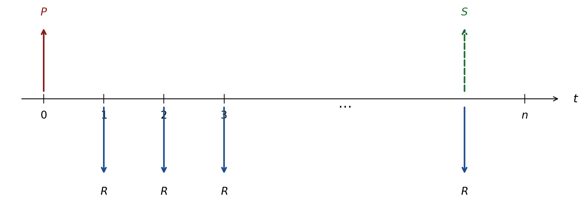
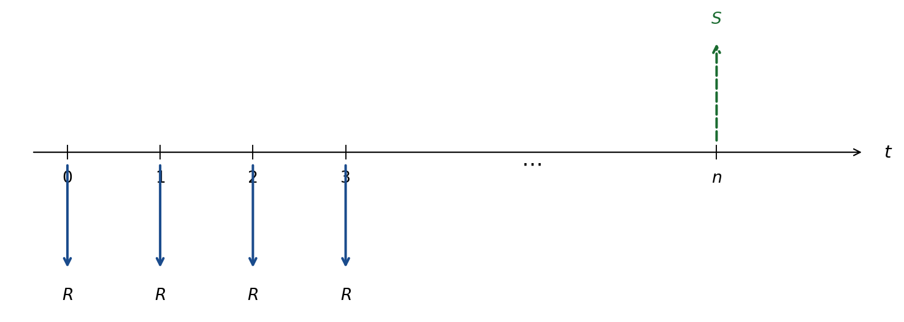
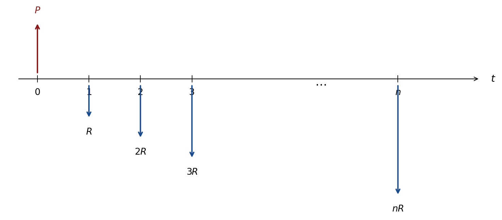

2 Séries Finitas — Capitalização Periódica
2.1 Visão Geral
Uma série de pagamentos é uma sequência de fluxos de caixa \(\{R_1, R_2, \ldots, R_n\}\) distribuída ao longo do tempo. Dependendo do comportamento desses valores, a série pode ser uniforme, em progressão aritmética (PA) ou em progressão geométrica (PG); os fluxos podem ser discretos ou contínuos; e a capitalização, periódica ou instantânea.
Este capítulo trata de séries discretas sob capitalização periódica (juros compostos).
2.2 Soma da Progressão Geométrica
As fórmulas de séries de pagamentos derivam diretamente da soma de uma Progressão Geométrica (PG).
TipDefinição
Uma Progressão Geométrica (PG) é uma sequência em que a razão entre termos consecutivos é constante e igual a \(q\):
\[q = \frac{a_k}{a_{k-1}}, \qquad A = \{a_1,\; a_1 q,\; a_1 q^2,\; \ldots,\; a_1 q^{n-1}\}.\]
Derivação da fórmula
Seja \(S\) a soma dos \(n\) termos:
\[S = a_1 + a_1 q + a_1 q^2 + \cdots + a_1 q^{n-1} \tag{I}\] \[qS = a_1 q + a_1 q^2 + \cdots + a_1 q^{n-1} + a_1 q^n \tag{II}\]
Subtraindo (I) de (II):
\[qS - S = a_1 q^n - a_1 \quad\Rightarrow\quad S(q-1) = a_1(q^n - 1).\]
ImportantResultado
\[\boxed{S = a_1 \left[\frac{q^n - 1}{q - 1}\right]} \qquad (q \neq 1).\]
Para \(q > 1\): PG crescente; para \(q < 1\): PG decrescente.
2.3 Séries Uniformes Vencidas (Postecipadas)
Na série uniforme vencida (ordinary annuity), os pagamentos \(R\) ocorrem ao final de cada período.
Fórmula do valor futuro (montante)
Levando cada depósito \(R\) ao instante \(n\):
\[S = R + R(1+i) + R(1+i)^2 + \cdots + R(1+i)^{n-1}.\]
Esta é uma PG com \(a_1 = R\), razão \(q = (1+i)\) e \(n\) termos:
ImportantResultado
\[\boxed{S = R\left[\frac{(1+i)^n - 1}{i}\right]}\]
O fator \(\dfrac{(1+i)^n-1}{i}\) é denominado Fator de Acumulação de Capital (FAC).
Fórmula do valor presente
Trazendo \(S\) ao instante zero:
ImportantResultado
\[\boxed{P = R\left[\frac{(1+i)^n - 1}{i}\right] \cdot \frac{1}{(1+i)^n} = \frac{R}{(1+i)} + \frac{R}{(1+i)^2} + \cdots + \frac{R}{(1+i)^n}}\]
Isolando \(R\) (prestação de um financiamento de principal \(P\)):
\[R = P\left[\frac{(1+i)^n \cdot i}{(1+i)^n - 1}\right].\]
2.4 Série Antecipada
Na série antecipada, os pagamentos ocorrem no início de cada período. Cada depósito fica aplicado por um período a mais, portanto:

ImportantResultado
\[S_{\text{ant}} = R\left[\frac{(1+i)^n-1}{i}\right](1+i), \qquad P_{\text{ant}} = R\left[\frac{(1+i)^n-1}{i}\right]\frac{1+i}{(1+i)^n}.\]
A prestação de um financiamento antecipado é:
\[R_{\text{ant}} = P\left[\frac{(1+i)^n \cdot i}{(1+i)^n - 1}\right]\frac{1}{1+i}.\]
2.5 Séries com Pagamentos Variáveis
Quando os pagamentos \(R_t\) variam ao longo do tempo, calcula-se diretamente:
\[S = \sum_{t=1}^{n} R_t\,(1+i)^{n-t}, \qquad P = \sum_{t=1}^{n} \frac{R_t}{(1+i)^t}.\]
2.6 Séries em Progressão Aritmética (Gradiente)
TipDefinição
Uma série em Progressão Aritmética (PA) possui pagamentos que crescem (ou decrescem) de um valor constante \(R\) a cada período. O primeiro pagamento é igual à razão \(R\):
\[\{R,\; 2R,\; 3R,\; \ldots,\; nR\}.\]
Gradiente crescente

Tomando o valor futuro da série e aplicando o mesmo truque da soma de PG:
ImportantResultado
\[S = \frac{R}{i}\left\{(1+i)\left[\frac{(1+i)^n-1}{i}\right] - n\right\}.\]
\[P = \frac{R}{i}\left\{(1+i)\left[\frac{(1+i)^n-1}{i}\right] - n\right\} \cdot\frac{1}{(1+i)^n}.\]
Gradiente decrescente
Para a série \(\{nR, (n-1)R, \ldots, 2R, R\}\):
ImportantResultado
\[S = \frac{R}{i}\left\{n(1+i)^n - \left[\frac{(1+i)^n-1}{i}\right]\right\}, \qquad P = S \cdot \frac{1}{(1+i)^n}.\]
2.7 Série com Valor Inicial Diferente da Razão
Para uma série com primeiro pagamento \(F\) e razão \(R\) (pagamentos \(F{+}R\), \(F{+}2R\), …, \(F{+}nR\)), decompomos em série gradiente + série uniforme:
ImportantResultado
\[S = \underbrace{\frac{R}{i}\left\{(1+i)\left[\frac{(1+i)^n-1}{i}\right]-n\right\}}_{S_{\text{grad}}} + \underbrace{F\left[\frac{(1+i)^n-1}{i}\right]}_{S_{\text{unif}}} \quad\text{(postecipada).}\]
2.8 Séries em Progressão Geométrica
TipDefinição
Em uma série em PG, cada pagamento cresce (ou decresce) pelo fator constante \((1+\alpha)\):
\[\{R,\; R(1+\alpha),\; R(1+\alpha)^2,\; \ldots,\; R(1+\alpha)^{n-1}\}.\]
Para \(\alpha > 0\): série crescente; \(\alpha < 0\): decrescente; \(\alpha = 0\): série uniforme.
O valor futuro resulta de uma PG com razão \(\delta = \dfrac{1+\alpha}{1+i}\):
ImportantResultado
\[\boxed{S = R\left[\frac{(1+i)^n - (1+\alpha)^n}{i - \alpha}\right]}, \qquad i \neq \alpha.\]
\[P = \frac{R}{i-\alpha}\left[1 - \left(\frac{1+\alpha}{1+i}\right)^n\right].\]
NoteNota — Caso especial i = α
A expressão acima é indeterminada quando \(i = \alpha\). Neste caso, todos os fluxos trazidos a valor futuro são iguais:
\[S = n\,R\,(1+i)^{n-1}.\]
TipExemplo moderno — Salários crescentes e poupança previdenciária
Um jovem de 25 anos começa a poupar R$ 500/mês, com aportes crescendo \(0{,}3\%\) a.m. (salário real), durante 40 anos (\(n = 480\) meses), à taxa de \(0{,}7\%\) a.m. (\(\approx 8{,}7\%\) a.a.):
\[S = 500\left[\frac{(1{,}007)^{480}-(1{,}003)^{480}}{0{,}007-0{,}003}\right] \approx \textbf{R\$ 3,1 milhões.}\]
Comparação: se os aportes fossem fixos (sem crescimento), \(S \approx\) R$ 1,9 milhão — a série em PG acumula 63% a mais pelo efeito composto do crescimento salarial.